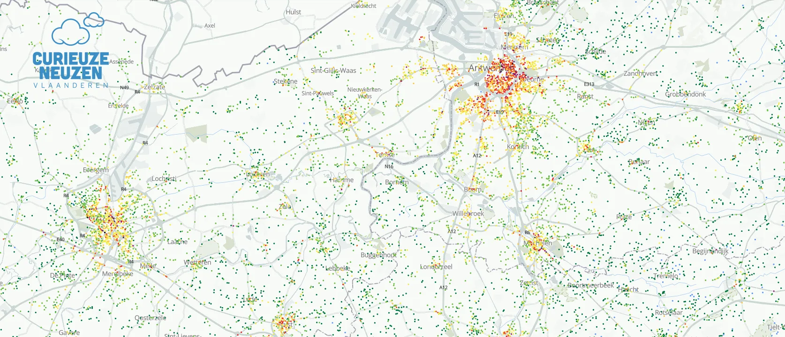
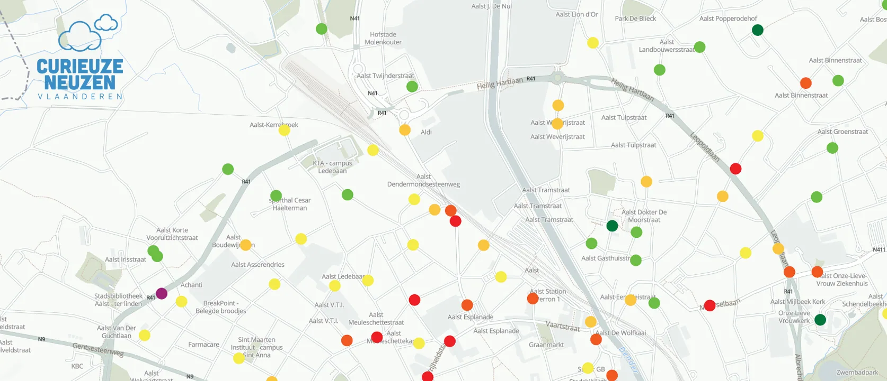

Twenty thousand people in Flanders hung a measuring tube from their window to measure the air quality in their street. Together with the University of Antwerp and the Flemish Environment Agency (VMM), it became the largest citizen-science experiment on air quality to date.

We presented the results in an interactive map where every participant could look up the NO₂ concentration in their street, compare it with the neighbourhood and set it against the European standards. We guided readers through the most striking patterns: busy traffic routes, school surroundings and the surprising differences between seemingly similar streets.

The project won the Belfius Press Prize for Digital Press and De Loep for investigative journalism.
Made with
Made by
- Ine Renson
- Text
- Tina Boeykens
- Design & coordination
- Wouter Van Driessche
- Coordination
- Frederik De Bleser
- Data & development